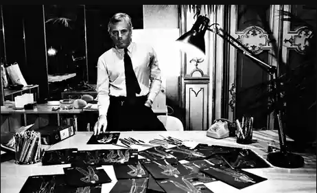

Decenija je započela nastavkom hipi izgleda kasnih 1960-ih, sa kaftanima, indijskim šalovima i tunikama sa cvetnim printom.
Džins je i dalje popularan, a javlja se i uniseks moda.
Možda su dva najinovativnija modna dizajnera u Francuskoj 1970-ih bili Kenzo Takada i Sonja Rikjel.
Neosporna zvezda pariske mode 1970-ih, Kenzo je inspiraciju crpeo iz celog sveta, mešajući zapadne i orijentalne uticaje.
Kraljica pletenih modela, Sonja Rikjel, 1974. godine, dizajnirala je svoje prve pulovere sa obrnutim šavovima, međutim, više
od toga, stvorila je čitav niz odeće koja je bila izuzetno individualna, a opet se mogla nositi gotovo bilo gde.
Stil Rikjel, u kome dominiraju pleteni odevni predmeti, osvojio je američko tržište, a čak i do danas mnogi Amerikanci Rikjel
smatraju pravom naslednicom Šanela.
Zbog panka London je zadržao značajan stepen uticaja na modu, najznačajnije u buticima Kings Rouda.
Ovaj hram britanskog ikonoklazma bio je usredsređen na fetišistički pribor i odevne predmete u kojima su crne gumene i čelične
kopče bili spoljni znaci skrivenog sadizma.
Postmodernistički i ikonoklastički pank pokret bio je direktna reakcija na ekonomsku situaciju tokom ekonomske depresije tog
doba, sredstvo mržnje koja je bila više visceralna nego politička.
Pank je u svom srcu imao manifest stvaranja kroz nered. Sa svojim pocepanim majicama, indijanskim frizurama, Dok Martens
cipelama, vezanim pantalonama i lancima, pankeri su izvezli sveukupni osećaj odvratnosti širom sveta.
Još jedan popularni britanski stil bio je odlučno nemoderni, ženstveni stil odeće koju je popularizovala Laura Ešli, a sastojao
se od dugih suknji i bluza sa visokim vratom u tradicionalnim cvetnim printovima, sa heklanim šalovima.
Modne teme zasnovane na dvadesetim, tridesetim, četrdesetim i pedesetim godinama bile su popularne tokom većeg dela decenije,
holivudski filmovi poput Kum i Veliki Getsbi i brojne izložbe o istoriji kostima u Metropolitenskom muzeju umetnosti u Njujorku
povećavale su njihovu popularnost.
Tokom 1970-ih nastala je nova generacija butika muške odeće.
Izgled muškaraca se 1970-ih promenio više nego u čitavom veku.
Mnogi modni dizajneri koji su napravili revoluciju u muškom izgledu dugovali su puno svojih inovacija Pjeru Kardenu: uska ramena,
uske linije, bez kravate, bez međusobnog povezivanja, odela sa patentnim zatvaračem, strukirane jakne ili tunike, ponekad bez košulje.
Radna odeća pružala je inspiraciju za manje formalni stil, podstičući dizajnere da gledaju dalje od tradicionalnog odela i, na primer,
usvoje uniseks izgled.
Tokom 1970-ih, kao rezultat svoje industrije konfekcije, Milano je potvrdio svoj status kao drugi nakon Pariza kao centra međunarodne
mode.
Dva najuticajnija italijanska modna dizajnera tog vremena verovatno su bili Đorđo Armani i Nino Ćeruti.
Armani je svoju prvu kolekciju za žene proizveo 1975. Godine, od samog početka linija je bila dinamična i urbana.
Armani je ponudio suzdržani stil koji je u velikoj meri privlačio sve veću populaciju žena koje su sada zauzimale sve više položaje u
poslu.
Ovo je bio samo početak ogromne karijere, koja je zaživela 1981. kada je lansiran Emporio Armani.
Nino Ćeruti je 1957. godine otvorio butik muške odeće Hitman u Milanu, a 1976. predstavio je svoju prvu kolekciju za žene.
Dve godine kasnije, lansirao je svoj prvi parfem.